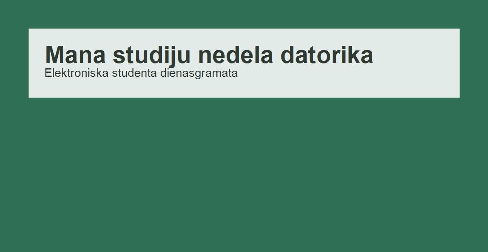

Elektroniskā studenta dienasgrāmata
Mana studiju nedēļa datorikā
Elektroniskā studenta dienasgrāmata
Nedēļas pārskats
Piecas dienas, piecas mācību situācijas
Šajā lapā apkopota datorikas studenta darba nedēļa: lekcijas, praktiskie darbi, semināri, patstāvīgā mācīšanās un īsa refleksija par katru dienu.
Draugu kalendārs
Tuvākās dzimšanas dienas
Šeit var ātri pārbaudīt, kuriem draugiem drīz būs dzimšanas diena, lai laikus sagatavotu apsveikumu.